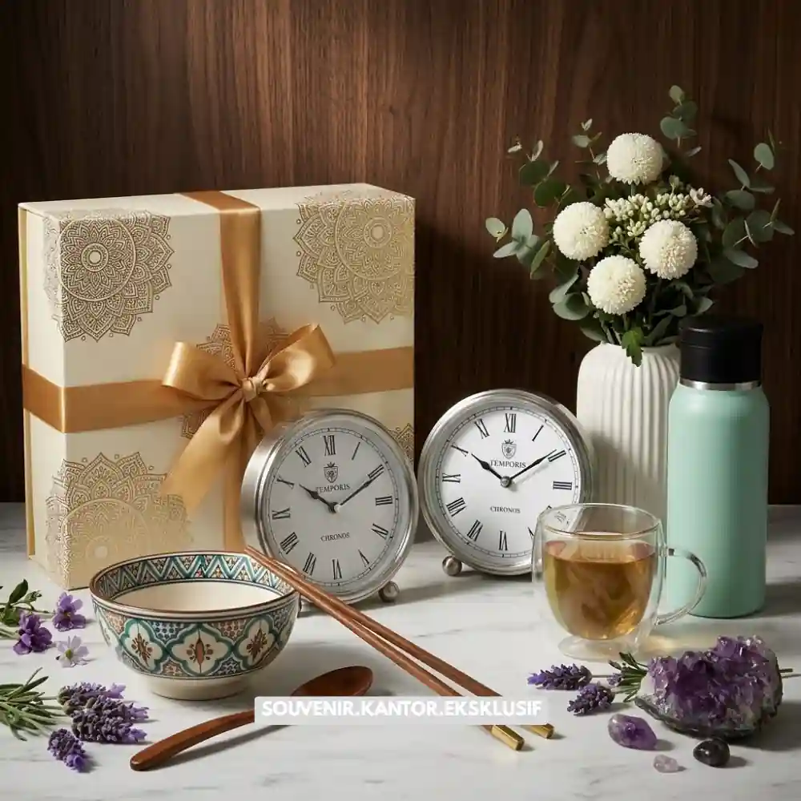

Daftar Isi
- Biaya hampers kantor dipengaruhi oleh jenis produk, kemasan, dan tingkat kustomisasi.
- Hampers untuk klien umumnya memiliki standar lebih eksklusif dibanding hampers untuk karyawan internal.
- Pemesanan dalam jumlah besar biasanya memberikan efisiensi biaya per unit.
- Penyusunan anggaran sejak awal membantu perusahaan menentukan paket yang sesuai kebutuhan.
Ketika menyusun anggaran hadiah korporat, banyak perusahaan bertanya berapa kisaran biaya yang wajar untuk hampers kantor, baik untuk klien maupun karyawan internal.
Secara umum, biaya hampers kantor sangat bervariasi karena dipengaruhi oleh beberapa komponen utama, mulai dari jenis produk yang dipilih, bahan kemasan, hingga tingkat kustomisasi seperti pencetakan logo dan kartu ucapan personal.
Semakin lengkap tingkat kustomisasi yang diminta, umumnya semakin tinggi pula biaya yang dibutuhkan.
Memahami komponen biaya ini penting agar perusahaan dapat menyusun anggaran yang realistis tanpa mengorbankan kualitas hadiah yang diberikan kepada klien maupun karyawan.
Apa Saja Faktor yang Memengaruhi Biaya Hampers Kantor?
Faktor utama yang memengaruhi biaya hampers kantor meliputi jenis dan kualitas isi produk, bahan kemasan yang digunakan, tingkat kustomisasi, serta jumlah unit yang dipesan sekaligus oleh perusahaan.
Jenis dan Kualitas Isi Produk
Isi hampers menjadi komponen biaya terbesar dalam sebuah paket. Produk premium seperti makanan impor, aksesoris berbahan kulit, atau peralatan kerja berkualitas tinggi tentu memiliki biaya lebih besar dibanding produk standar yang lebih terjangkau.
Bahan dan Desain Kemasan
Kemasan turut menyumbang porsi biaya yang tidak sedikit, terutama jika perusahaan menginginkan kemasan kotak kayu, box custom, atau kemasan dengan finishing khusus dibanding kemasan standar berbahan kertas atau karton biasa.
Tingkat Kustomisasi
Semakin banyak elemen kustomisasi yang diminta, seperti cetak logo pada kotak, label khusus, atau kartu ucapan personal untuk setiap penerima, maka biaya produksi cenderung meningkat mengikuti kompleksitas pengerjaan.
Jumlah Unit yang Dipesan
Pemesanan dalam jumlah besar umumnya memberikan efisiensi biaya per unit dibanding pemesanan satuan, karena proses produksi dapat dilakukan lebih efisien secara massal.

Pilihan Hampers Corporate Premium
Apakah Biaya Hampers untuk Klien Berbeda dengan Karyawan?
Biaya hampers untuk klien umumnya lebih tinggi dibanding hampers untuk karyawan, karena hampers klien biasanya menggunakan standar isi dan kemasan yang lebih eksklusif untuk menjaga kesan profesional.
Perbedaan ini wajar terjadi karena tujuan pemberian hampers kepada kedua segmen tersebut berbeda.
Hampers untuk klien difokuskan pada penguatan hubungan bisnis dan citra profesional perusahaan, sehingga isi dan kemasannya cenderung lebih eksklusif.
Sementara itu, hampers untuk karyawan lebih menekankan pada apresiasi internal, sehingga dapat disesuaikan dengan anggaran yang lebih fleksibel tanpa mengurangi makna apresiasi yang disampaikan.
Meski demikian, bukan berarti hampers untuk karyawan harus terlihat murahan. Kunci utamanya tetap pada kesesuaian antara isi, kemasan, dan pesan yang ingin disampaikan kepada penerima.
Bagaimana Cara Mengalokasikan Anggaran Hampers Kantor Secara Efisien?
Anggaran hampers kantor dapat dialokasikan secara efisien dengan menentukan segmen penerima terlebih dahulu, menetapkan kisaran budget per paket, dan memesan dalam jumlah yang terkonsolidasi.
Langkah pertama yang disarankan adalah mengelompokkan penerima hampers berdasarkan segmen, misalnya klien prioritas, klien reguler, dan karyawan internal. Setelah itu, perusahaan dapat menetapkan kisaran anggaran untuk masing-masing segmen sesuai dengan tingkat kepentingan hubungan tersebut.
Selain itu, mengonsolidasikan seluruh kebutuhan hampers dalam satu periode pemesanan, alih-alih memesan secara terpisah dalam waktu berdekatan, dapat membantu perusahaan mendapatkan penyesuaian harga yang lebih efisien sekaligus memudahkan koordinasi pengiriman.

Solusi Souvenir Korporat Elegan dari Vendor Terpercaya
Kesimpulan
Menyusun anggaran hampers kantor secara tepat memerlukan pemahaman terhadap faktor-faktor yang memengaruhi biaya, mulai dari isi produk, kemasan, tingkat kustomisasi, hingga jumlah pesanan.
Dengan perencanaan yang matang, perusahaan dapat memberikan hadiah yang berkesan tanpa harus mengorbankan efisiensi anggaran.
Untuk mendapatkan simulasi biaya dan rekomendasi paket sesuai anggaran perusahaan Anda, konsultasikan kebutuhan hampers kantor Anda bersama Hampers Malang melalui hampersmalang.web.id.
Butuh Konsultasi Anggaran Hampers Kantor?
Tim ahli kami siap membantu Anda menyusun paket hadiah eksklusif yang sesuai dengan budget.
Pilihan barang akan disesuaikan dengan kebutuhan karyawan dan klien Anda.
Seluruh desain kemasan dapat diselaraskan dengan identitas visual perusahaan.
Dapatkan penawaran harga terbaik untuk pesanan massal!
FAQ Biaya Hampers Kantor
Apakah biaya hampers kantor bisa disesuaikan dengan anggaran terbatas?
Bisa, penyedia jasa umumnya menawarkan beberapa pilihan paket dengan kisaran harga berbeda sesuai kebutuhan dan anggaran perusahaan.
Apakah jumlah pesanan memengaruhi harga per unit hampers?
Ya, pemesanan dalam jumlah besar umumnya memberikan efisiensi biaya per unit dibanding pemesanan dalam jumlah kecil.
Apakah biaya custom logo dihitung terpisah dari harga paket hampers?
Tergantung penyedia jasa, sebagian memasukkan biaya kustomisasi dalam paket, sementara sebagian lainnya menghitungnya secara terpisah.
Maroon Souvenir
Partner Corporate Gift terpercaya di Indonesia. Berpengalaman melayani ratusan perusahaan sejak 2018.
Lihat Portofolio Kami